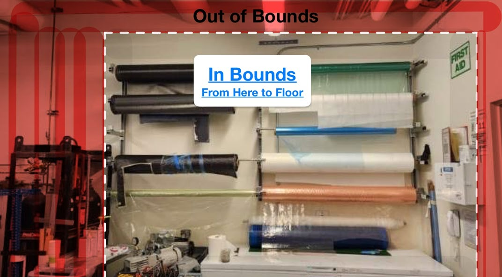
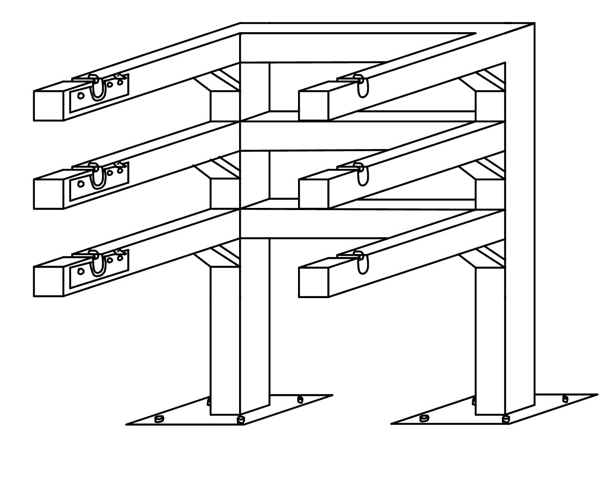

Safer access to composite material rolls.
The Composite Carrier is a proof-of-concept retrieval system that replaces ladder-based access with rack-mounted rotary latches, a ground-level pulley release, and a custom Genie dolly attachment.
Designed around the real constraints of the Composites Lab.
The original storage setup placed heavy rolls high on the wall, forcing users to climb to retrieve material. The project evolved from early carousel concepts into a simpler mechanical carrier that interfaces with existing lab equipment.
Approximate elevated storage height addressed by the final retrieval concept.
Rotary latch assembly, pulley-based release system, and Genie dolly attachment.
The intended operating position for safely releasing and transporting rolls.

The existing system made material access unnecessarily risky.
Composite rolls could weigh up to roughly 100 lb, while the existing wall-mounted arrangement lacked an easy retrieval method and required ladder access for higher rolls. The team’s objective was to keep the storage capacity while making roll handling safer and more repeatable.
Enable users to retrieve composite material rolls from elevated storage without climbing a ladder, while maintaining compatibility with the existing lab and Genie dolly.
From carousel ideas to a focused lock-and-lift system.


A mechanical solution with minimal powered complexity.
1. Rack-mounted latches
Rotary latches secure each roll during storage and resist unintended removal.
2. Pulley release
A ground-level release allows a pair of latches to be disengaged together without climbing.
3. Dolly attachment
A custom foldable cradle transfers the roll into the Genie dolly for controlled lifting and transport.